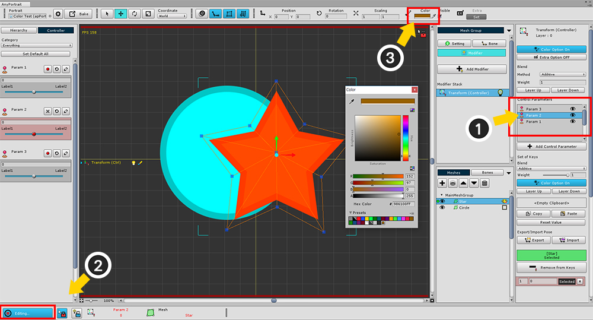
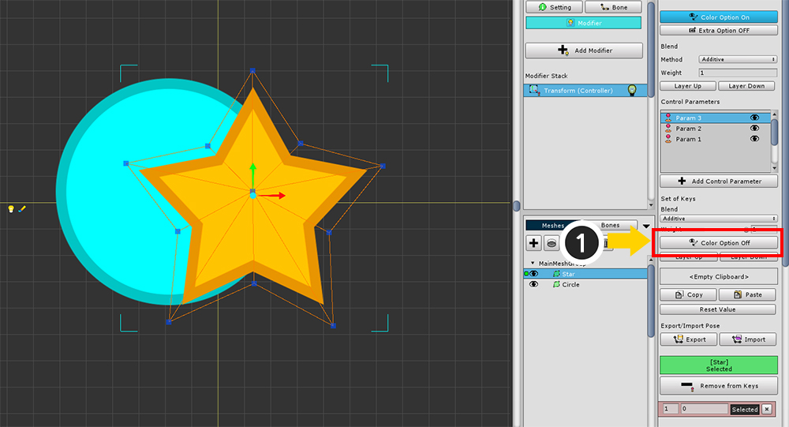

AnyPortrait > マニュアル > 複数のモディファイアによる色の問題
複数のモディファイアによる色の問題
1.0.6
モディファイヤを使用すると、メッシュの色を変更することができます。
ところが、複数のモディファイヤや制御パラメータを利用する際の色が間違って適用され、メッシュの色が濃くなる場合があります。
一般的に、「メッシュの基本色」を変更した後にモディファイヤを追加すると、この問題が発生したりします。
このページは、色の問題が発生した場合や解決方法について説明します。

2つのメッシュを用意しました。

メッシュを選択して、基本的な色を変更します。
カラーは「2X Multiply」方式（2倍のRGBと1倍のAlphaが乗算方式）に適用されます。
同じように、他のメッシュの基本色も変えました。
（この時、設定された色の値を記憶しましょう。）

「Transform（Controller）」モディファイヤを追加します。
同様に色を指定することができる「Morph（Controller）」モディファイヤを追加してもされます。

モディファイヤでメッシュの色を変更するために、「Color Option」を入れます。

色の問題を再現するために、3つの制御パラメータを生成しました。
これは、複数のモディファイヤを利用するのと同じです。
(1) メッシュを選択した状態で、制御パラメータの「キーの作成ボタン」を押します。
(2) モディファイヤに追加された制御パラメータが選択されたことを確認します。
(3) 制御パラメータにより、色が変更されることができるようモディファイヤと同様に、「Color Option」を入れます。

同じように第二の制御パラメータをモディファイヤに追加します。
ところが、メッシュの色が暗くなるのを見ることができます。
（色によって、より明るくなることがあります。）

第三の制御パラメータが追加されると、色がより多く変化を見ることができます。
制御パラメータに応じたメッシュの色を変更する作業をしていない状態です。

問題の原因を把握しましょう。
(1) 制御パラメータを選択します。
(2) 「編集モード」をオンにします。
(3) メッシュを選択した状態で、色の値を確認すると上記の設定した「メッシュの基本色」が指定されていることを見ることができます。
「メッシュの基本色」は、すべての制御パラメータやモディファイヤの「デフォルト」に適用されるため、これらの現象が発生することです。
AnyPortraitは、複数のモディファイアや制御パラメータを複合的に使用できるのは利点であるが、
同時に多数のカラー値が適用されると意図しない結果を見ることができます。

最初の制御パラメータを除いた残りの色の値をデフォルト値である「グレー（0.5、0.5、0.5、1）」に設定すると、
正常にレンダリングがされます。

または色を制御していない制御パラメータやモディファイヤの「Color Option」を引くことも問題を解決するための良い方法です。